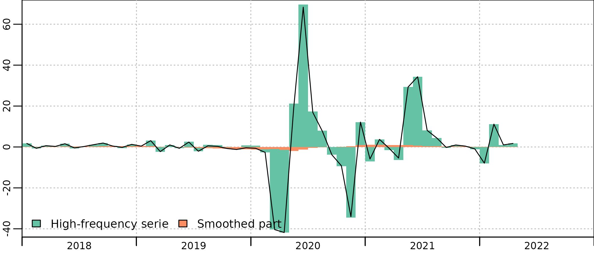

The Covid-19 pandemic and the economic lockdowns put in place in various countries to tackle with it had led to unusually large drop in economic activity in 2020 and 2021. Trying to estimate this drop in activity in quarterly national accounts using the two-step benchmark method leads to several challenges :
at first, when no annual data is available for the pandemic years, the method tends to underestimate the drop in activity : the two-step method tends to produce quarterly accounts that are smoother than the indicators, due to the constant and the smothed parts. This is usually not problematic as this smoothing tends to be unbiased : it brings every evolution rates closer to zero (or to the trend of the series for differenciated accounts). It thus reduce the noise of the series while not creating significant bias. But during lockdowns, as most economic indicators are oriented downward, this smoothing creates a significant upward bias, amounting to several points of quarterly GDP at the height of the crisis (Q2 2020)
then, when annual data become available and is included in the two-step benchmark, there is larger than usual annual residuals in 2020 and 2021 in the benchmaking equation. When the residual is smoothed, this leads to a monthly or quarterly residuals that decreases as soon as mid-2019, well before the beginning of the crisis.
At Insee, outliers were used to adress both issues in the compilation of QNA. While the logic is sligthly different in the presence or absence of annual data for the period of crisis, it is consistent with both situation, which reduced revisions when we integrated annual data.
This vignette presents the use of outliers in both situation, starting (illogically) with the simpler case of presence of annual data and with the illustrative example of household consumption in food and accommodation services (section I of the nomenclature of activities), often labeled as catering or hospitality services, a sector particularly affected by lockdowns.
The case with annual accounts
What happens without outliers
We use monthly, seasonally and working days adjusted (SA-WDA) turnover index (base 100 in 2015) as an indicator for monthly household actual final consumption in current M euros, benchmarked on the corresponding annual account, known up to 20211.

Let’s first use the most basic model, in levels and without constant :
benchmark <- twoStepsBenchmark(turnover_catering,consumption_catering)We can compare the indicator and the estimated QNA series2 :
plot(in_disaggr(benchmark, type="levels-rebased"), start=c(2010,1))
plot(in_disaggr(benchmark), start=c(2018,1))The timing of Covid restrictions is clearly apparent on both the indicator (HF serie) and the benchmarked account (benchmark), with a first lockdown between March and May 2020, a second lockdown in November 2020, followed by a curfew that had an as strong impact on the consumptions of hotel and restaurant services, up to June 2021. In January 2022, the drop of activity is due to the Omicron variant of the Covid-19 virus, with no lockdown but a very large number of people affected and in quarantine at home.
The benchmark is quite good, and the account follows closely the indicator, with scaled-down evolutions. But we can clearly see in the account a decrease in consumption from mid-2019, that is not present in the indicator.
This is an artefact caused by the smoothing of the residual. There is a sharp 6 b€ drop in the annual residual between 2019 and 2020, and the smoothing procedure tries to compute a monthly series with the most gradual drop, thus starting to decrease in May 2019, which is clearly absurd in that case.
There is thus a significant contribution of the smoothed part to the QNA evolution in 2019-2020 :
plot(in_disaggr(benchmark, type ="contributions"), start=2018)
Introduction of outliers
The idea behind the outlier is to capture this larger than usual residual and to affect it to the correct months and quarters. While we don’t know why there is a larger than usual gap between the indicator and the account, we are pretty sure that it is related to the Covid lockdowns. It is thus a better assumption to try to disaggregate this residual according to a measure of the stringency of the lockdowns rather than smoothing it agnostically over the year 2019 to 2022.
While there is a lot of ways to build this outlier indicator, a convenient way is to derive it from the usual indicator. In this example, we see that the turnover index is close to 130 before and after the lockdowns. Thus the distance to 130 is a good indicator of the intensity of the crisis :
outlier <- window(turnover_catering-130, c(2020,1), c(2021,12))
outlier[c(1,2, 20:24)] <- 0
plot(outlier)The absolute value of the indicator is lower than 2 in January and February 2020 and after August 2021, so we set it to 0 for those months, restricting the outliers to the lockdowns period.
The idea is to add this outlier to the benchmark relation, as an additive outliers :
\[ C = I * a + out * b + u \]
Where:
- \(C\), an univariate time series, is the high-frequency account.
- \(I\), a matrix time series, combines the columns of the indicators and the constant.
- \(a\), a numeric vector, stands for the coefficients to be applied.
- \(out\) is the matrix time series of the ouliers. Here we have one additive outliers, completed with 0 outside the 2020-2021 period.
- \(b\), a numeric vector, stands for the coefficients to be applied to the outliers.
- \(u\), an univariate time series, is the smoothed part of the benchmark.
The coefficients are estimated at low-frequency with the annual accounts, the annualized turnover index and the aggregated outlier :
\[ C_{aggregated}' = I_{aggregated}' * a + out_{aggregated} * b + u' \]
These coefficients are applied at high-frequency, to obtain the fitted values of the benchmark:
\[ \text{fitted.values} = I * a + out * b \] u is smoothed as usual:
\[
u = smooth(extrapolation(C_{aggregated} - \text{fitted.values}_{aggregated}))
\] This can be done using outliers in the twoStepsBenchmark function :
benchmark_out <- twoStepsBenchmark(turnover_catering,consumption_catering,
outliers = list(AO2020 = outlier))
coefficients(summary(benchmark_out))
#> Estimate StdErr t.value p.value
#> constant 24179.889019 1540.386318 15.697289 1.038088e-12
#> hfserie 46.720760 1.519744 30.742528 2.598318e-18
#> AO2020 7.964003 2.941739 2.707243 1.356125e-02In this example, the indicator and the outlier are colinear in the lockdown period, so this is equivalent to estimated a specific a coefficient for the lockdown period, with an account that follow more closely the indicator during that period.
The resulting account reflects better the economic outlook, without contributions of the smoothed part in the end of 2019 :
plot(in_disaggr(benchmark_out, type ="contributions"), start=2018)
plot(in_disaggr(benchmark_out, type="levels-rebased"), start=c(2010,1))The variation of the residual and the smoothed part are much lower :
The case without annual account
Let’s go back in August 2020 : the turnover index is known up to June 2020 and the annual account up to 2019.
turnover_catering_2020 <- window(turnover_catering, end = c(2020,6))
consumption_catering_2020 <- window(consumption_catering, end = 2019)
benchmark_2020 <- twoStepsBenchmark(turnover_catering_2020,consumption_catering_2020)
coefficients(summary(benchmark_2020))
#> Estimate StdErr t.value p.value
#> constant 24237.70495 1582.064943 15.32030 3.793344e-12
#> hfserie 46.65203 1.564194 29.82496 2.018110e-17As 2020 does not enter into the estimation of the annual residual, there is no smoothing related issue here. But the message of the indicator is clearly attenuated in the monthly account : while the indicator in April 2020 is at 17 % of its February level, the account in April is at 38 % of its April level, more than twice that level.
plot(in_disaggr(benchmark_2020, type ="contributions"), start=2018)
plot(in_disaggr(benchmark_2020), start=c(2010,1))To correct this, we will use the same specification for the outlier. But as the annual account for 2020 is not yet known, the coefficients for the outlier is not known, and we will have to manually specify it.
One of the way to do so is to compute the value of the coefficient that will enable the account to follow exactly the indicator.
We have a drop of around 110 points in the turnover index between February and April, and we would like to have a 83 % drop in the account, from a value of 8 000 M€. So we can compute \(b\) as :
\[ b = 8000 * 0.83/110-a \approx 14 \]
benchmark_out_2020 <- twoStepsBenchmark(turnover_catering_2020,consumption_catering_2020,
outliers = list(AO2020 = outlier),
set.coeff = c(AO2020 = 14)
)
coefficients(summary(benchmark_out_2020))
#> Estimate StdErr t.value p.value
#> constant 24237.70495 1582.064943 15.32030 3.793344e-12
#> hfserie 46.65203 1.564194 29.82496 2.018110e-17
#> AO2020 14.00000 NA NA NAThis is a broad assumption, but the resulting estimates for April 2020 (1574 M€) is closer than the estimates without outlier (3085 M€) from the final estimates using annual accounts for 2020 and 2021 and outliers (2161 M€). And the value for \(b\) (14) is not so far from the final estimated value (8).
One could have anticipated that, in the annual account, total final consumption will drop less than turnover in April, as it includes government consumption in hotels (for some social assistance policies that continued during lockdown) and excludes collective firms and factories restaurants, totally closed during lockdown, thus going for a slighlty lower \(b\) coefficient, very close to the final estimate.
plot(in_disaggr(benchmark_out_2020, type ="contributions"), start=2018)
plot(in_disaggr(benchmark_out_2020, type="levels-rebased"), start=c(2010,1))Specification of the ouliers
Outliers need to be specified on complete low-frequency period, so one or more complete year(s) for a annual to monthly or quarterly disaggregation and one or more complete quarter(s) for a quarterly to monthly disaggregation.
Outliers can be additive outliers (AO) or level shifts (LS). Additive outliers are completed with zeroes before and after the specified values, while level shifts are completed with 0 before the specified values and with the last specified values after.
-
Outliers are specified as a named list of numeric vectors, whose pattern is like list(AO2008T2=c(0,0,3,2),LS2002=c(0.1,0.1,0.1,0.1)) where :
“AO” stands for additive outlier or “LS” for level shift
The integer that follows stands for the outlier starting year
an optional integer, preceded by the letter T, stands for the low-frequency cycle of the outlier start.
The numeric vector values stands for the disaggregated value of the outlier and its length must be a multiple of hf / lf.
AO2020 = c(1,2,1,0) # A one-year AO in 2020, with half the weight in Q2
# and the rest split between Q1 and Q3
AO2008T2=c(0,0,3) # A one-quarter AO in the second quarter of 2008,
# which is concentrated in June
LS2010 = c(0,1,2,3) # A level shift that start in Q2 2010 and increase
# gradually in Q3 and Q4, and remains at its level afterwards